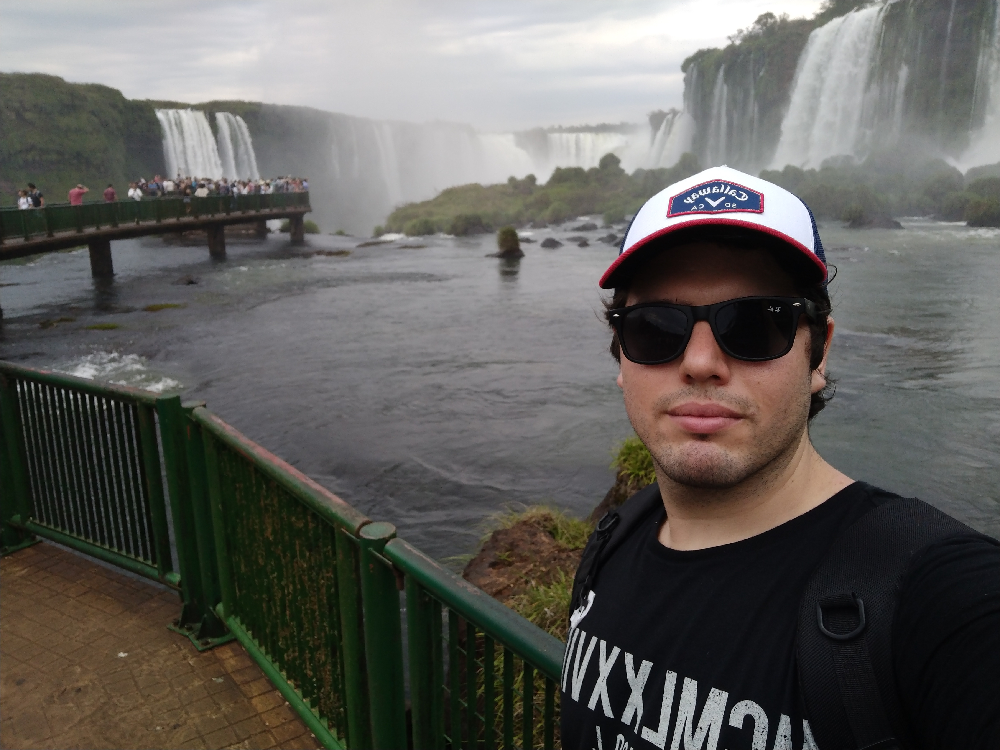

Curriculum Vitae
Descripción Personal
Mi nombre es Juan Yancovich, soy de Corrientes Capital, estudiante de contabilidad, musico y entusiaste del gimnasio tradicional
Educación
- Graduado de Secundaria en el instituto privado San Benito
- Actualmente Estudiante Avanzado de la carrera de Contador Público Nacional en la UNNE
Experiencias Laborales
- Lift Operator en Snowshoe Mountain Resort 2016
- Estudio contable Rias: Liquidador de impuestos varios y tareas de control.
Skills
- Capacidad de aprendizaje rapido
- Ingles Fluido
- Experiencia con Ui Path y conocimientos básicos de Phyton
- Capacidad de integración de multiples disciplinas para resolver conflictos
- Experiencia con atención a clientes
Tu foto

Hobbies
- Programación
- Gimnasio, programación de planes y experimentación
- Critomonedas y economía
- Libros
Porque estudiar en SoyHenry
Me parece muy importante el aprendizaje de programación orientado a lo que el merado busca, para asi poder integrarme a un nuevo mercado laboral, y a su vez abrir la posibilidad de integrar conocimientos anteriores con lo que pueda aprender en esta carrera.
El objetivo final es adquirir la mentalidad de como un programador debe pensar para resolver problemas para poder enfrentar cualquier tipo de desafíos.